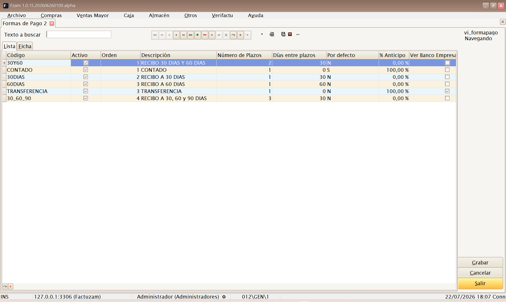

07 · Menú Otros
El menú Otros agrupa la administración y configuración de la aplicación: parámetros del entorno, impuestos, contadores de numeración, formas de pago de documentos, seguridad (usuarios y permisos), copias de seguridad y herramientas avanzadas. Son opciones que usa principalmente el administrador.
Estructura del menú:
Otros
├── Parámetros del entorno
├── Colas de envíos
│ ├── Verifactu
│ ├── PrestaShop
│ └── Web Service Fzam
├── Grupos de IVA
├── Impuesto IVA
├── Contadores
├── Formas de pago documentos
├── Usuarios, Grupos y Perfiles
│ ├── Usuarios
│ ├── Empleados
│ ├── Grupos
│ ├── Perfiles
│ ├── Permisos
│ └── Permisos (tabla)
├── Hacer Copia de Seguridad
├── Recuperar Copia de Seguridad
├── Generador de Procesos
└── Procesos auxiliares BBDDParámetros del entorno

Atajo de menú: [Ctrl]+[F10]
Pantalla de Parámetros Generales de la Aplicación. Centraliza la
configuración del entorno: comportamiento por defecto, rutas, opciones de
impresión y de documentos, valores predeterminados de la empresa de trabajo,
etc. Cada valor puede asignarse a un usuario, a un grupo o a Todos.
Categorías habituales:
| Categoría | Uso |
|---|---|
| Directorios / Fotos | Carpeta local o compartida de fotos (appDirFotos) y número de atributos usado en su clave. |
| Servicios web | URL (appApiUrl), credencial (appApiToken) y referencia de instalación (appApiReferencia) comunes para fotos, correo, ventas, SIF y recuentos; también ciclo y máximo de intentos de la cola de ventas. |
| Verifactu | Modo fiscal, entorno, datos del SIF, ciclo de cola, URLs y parámetros de firma/reloj. |
| PrestaShop | Conexión API, tienda, empresa, tarifa, cola, niveles de familia y checks Sincronizar stock y precios, Crear artículos en PrestaShop al darlos de alta, Activar artículos en PrestaShop al marcar En web y Hacer barrido periódicamente. |
| Apariencia | Tema, paleta de color e idioma de la interfaz. |
| Caja | Valores por defecto del TPV y comportamiento de arqueo. |
El valor efectivo se resuelve por herencia: primero el valor propio del usuario, después el de su grupo y, por último, el de Todos. Un valor más específico sustituye al más general. Esto permite, por ejemplo, que dos grupos trabajen con empresas, almacenes y tiendas PrestaShop diferentes. Cada sesión atiende únicamente la configuración efectiva de su usuario.
La clave API queda oculta para los usuarios que no son administradores raíz.
Los cuatro checks comienzan desmarcados y son independientes. Sincronizar
stock y precios autoriza la actualización de productos existentes
localizados por una reference exacta y única. Crear artículos en
PrestaShop al darlos de alta solicita el alta completa cuando no existe esa
correspondencia. El alta siempre crea primero el producto con active=0.
Activar artículos en PrestaShop al marcar En web
(appPrestaShopActivarArticulosAlMarcarWeb) autoriza su activación únicamente
al final de un alta o una sincronización correctas iniciadas al pasar En
web de No a Sí; su valor inicial es False. Hacer barrido
periódicamente habilita la reconciliación completa por horas; aunque esté
desmarcado, la recuperación de pendientes continúa cada 60–120 segundos.
Niveles de familia a crear (0 = todos)
(appPrestaShopNivelesFamiliaAlta) es un entero heredable cuyo valor inicial
es 0. Con 0 se exporta toda la jerarquía local; con un valor positivo se
conservan ese número de niveles contados desde la familia hoja y se crean en
orden raíz → hoja. La categoría raíz configurada en PrestaShop no cuenta como
nivel local. En DEMO-CAMISA, cuya única familia local es ROPA, solo se
exporta ese nivel con cualquier valor permitido.
Antes de activar la integración, sigue la lista de comprobación de la integración.
Idioma y traducciones
La selección no es una opción independiente del menú. Su ruta exacta es
Otros ▸ Parámetros del entorno ▸ Apariencia ▸ Idioma de la interfaz.
El parámetro appIdioma ofrece siempre español (es-ES), inglés británico
(en-GB), catalán (ca-ES) y chino simplificado (zh-CN), además de los
idiomas activos que existan en la base de datos. qps-ploc queda reservado
para pruebas de maquetación.
Para cambiarlo:
- Selecciona el usuario, grupo o alcance al que se aplicará el parámetro.
- Abre Apariencia ▸ Idioma de la interfaz.
- Elige el idioma. Para
en-GB,ca-ESozh-CN, Factuzam abre el diálogo Descargar traducción. Si el paquete ya está instalado, lo reutiliza; en caso contrario, lo obtiene del servicio configurado medianteappApiUrlyappApiToken. - Espera a que termine la comprobación y pulsa Guardar (F12). Las ventanas abiertas se actualizan en ese momento; cierra y vuelve a abrir Factuzam para aplicar el cambio completo a toda la sesión.
La descarga necesita conexión al servicio de Factuzam y un token con el
ámbito descargar:traducciones. El ZIP autenticado solo se instala después
de comprobar el idioma, la versión del contrato, el orden y tamaño de sus
SQL y la huella SHA-256 declarada para cada archivo. Después de preparar el
esquema, los SQL de datos se instalan en una transacción. Si falla la
descarga, la validación o la instalación, se mantienen el idioma y el valor
anteriores.
El idioma afecta a formularios, menús, mensajes, controles Developer Express, tickets e informes FastReport que tengan traducción. Si falta una clave, un idioma no está activo o no se puede consultar la base de datos, se conserva el texto español compilado como respaldo; la pantalla nunca queda vacía por una traducción ausente.
qps-plocalarga y marca los textos para que desarrollo detecte rótulos cortados. No es un idioma para trabajar en producción.
Administración del catálogo
Las traducciones viven en el catálogo central fza_traducciones. La
utilidad independiente Editor de traducciones (utlTraduc) permite al
administrador:
- Conectar usando el INI de Factuzam.
- Sincronizar los textos españoles conocidos por el ejecutable.
- Elegir un idioma y mostrar todas las claves o solo las pendientes.
- Editar y guardar las traducciones, conservando marcadores como
%sy%d.
El editor también admite una etiqueta nueva, como fr-FR, sin modificar
el ejecutable. Los cambios se guardan de forma transaccional y auditada.
Los textos escritos manualmente por el usuario dentro de un formato de
informe personalizado no se traducen automáticamente.
Grupos de IVA
Atajo de menú: [Ctrl]+[O]
Define agrupaciones de tipos de IVA (zonas/regímenes de IVA). Sirve para asociar a empresas, clientes y artículos el conjunto de tipos impositivos que les corresponde (p. ej. IVA peninsular frente a otros regímenes).
Impuesto IVA

Atajo de menú: [Ctrl]+[I]
Mantiene los tipos de IVA concretos y sus porcentajes (general, reducido, superreducido…), junto con el recargo de equivalencia asociado a cada uno. Es la base del cálculo de impuestos en compras y ventas.
Los porcentajes de IVA los fija la normativa. No los cambies salvo que cambie la ley; un tipo mal configurado afecta a toda la facturación.
Contadores

Atajo de menú: [Ctrl]+[R]
Gestiona los contadores de numeración de los documentos (facturas, albaranes, pedidos…) por serie y empresa. Cada documento toma su número correlativo del contador correspondiente.
Los números de factura deben ser correlativos y sin huecos por exigencia legal. No retrocedas ni reutilices contadores de facturación.
Formas de pago documentos
Catálogo de formas de pago aplicables a los documentos de compra y venta mayor (contado, transferencia, giro a X días, etc.). Define vencimientos y comportamiento de cobro/pago para facturas, pedidos y albaranes.
Campos principales:
| Campo | Para qué sirve |
|---|---|
| Número de plazos | Cuántos vencimientos genera al crear efectos o recibos. |
| Días entre plazos | Separación entre vencimientos. |
| % Adelanto | Parte que se cobra o paga por adelantado. |
| Ver Banco Empresa en Borrador | Muestra la selección de banco de la empresa al generar cobros o pagos. |
| Código Facturae | Código oficial PaymentMeans (01 a 19) usado al emitir eDoc. |
Sub-pestañas: Más Datos, Ventas (uso en ventas) y Otros.

Atajo de menú: [Shift]+[Ctrl]+[G]
No es el mismo mantenimiento que Formas de Pago Caja, que configura los botones y tipos de pago del TPV.
Usuarios, Grupos y Perfiles
Submenú de seguridad. Define quién entra a la aplicación y qué puede hacer.
Usuarios
Atajo de menú: [Ctrl]+[H]
Alta y mantenimiento de los usuarios que acceden a Factuzam (los que introducen credenciales en el login). Incluye su contraseña, estado y el perfil/grupo que determina sus permisos.
Empleados
(Sin atajo de menú; se abre desde el menú.)
Ficha de empleados del negocio (datos de personal). Puede vincularse a usuarios y a operaciones de caja para saber quién realiza cada venta.
Grupos
Atajo de menú: [Ctrl]+[J]
Grupos de usuarios para asignar permisos en bloque (p. ej. Cajeros, Administración, Encargados). Un usuario hereda los permisos de su grupo.
Perfiles
Atajo de menú: [Ctrl]+[W]
Perfiles de configuración que personalizan la apariencia y el comportamiento de las pantallas (columnas visibles, captions, opciones) para un usuario o grupo.
Permisos

Atajo de menú: [Ctrl]+[Q]
Pantalla de Gestión de Permisos en forma de árbol: activa o desactiva, por grupo/usuario, el acceso a cada menú y acción de la aplicación. Es la forma recomendada de configurar la seguridad de forma visual.
El árbol replica el menú real de la aplicación y permite trabajar por:
- Todos, grupo o usuario.
- Permitir, denegar o heredar una rama completa.
- Copiar permisos de un sujeto a otro, combinando o reemplazando.
- Gestionar permisos de menú y permisos de pantalla: consultar, insertar, modificar, borrar, exportar a Excel e imprimir.
En Artículos ▸ Activar/desactivar web, el permiso específico controla quién puede cambiar la casilla En web de la ficha de artículos. Si el usuario no lo tiene concedido, la casilla queda en solo lectura y la grabación no puede alterar esa marca.
Cuando un usuario autorizado desmarca En web, Factuzam pregunta qué hacer: Sí desactiva el producto en PrestaShop y deja de sincronizarlo; No solo deja de sincronizarlo y conserva su estado remoto; Cancelar no guarda el cambio. Al marcar En web, la activación remota depende del parámetro heredable Activar artículos en PrestaShop al marcar En web y, si está autorizada, se ejecuta únicamente al final de un proceso correcto.
Los cambios de permisos se aplican en el próximo login del usuario afectado.
Permisos (tabla)
(Sin atajo de menú; se abre desde el menú.)
La misma información de permisos presentada en formato tabla (rejilla), para edición masiva o revisión rápida de muchos permisos a la vez.
Colas de envíos
La ruta Otros ▸ Colas de envíos reúne en un solo lugar el seguimiento de las tres integraciones:
Verifactu
Ruta: Otros ▸ Colas de envíos ▸ Verifactu
Muestra las comunicaciones fiscales pendientes, en proceso, enviadas o con error. Su uso y el reproceso autorizado se explican en capítulo Verifactu · Cola de envíos.
PrestaShop
Ruta: Otros ▸ Colas de envíos ▸ PrestaShop
Muestra los trabajos de catálogo pendientes, procesados o con error y el historial HTTP de cada intento. Es una pantalla de diagnóstico de solo lectura: no modifica ni reintenta trabajos. Consulta el detalle operativo en Integración con PrestaShop ▸ Ventana de seguimiento.
Web Service Fzam
Ruta: Otros ▸ Colas de envíos ▸ Web Service Fzam
Esta cola publica en segundo plano una copia completa de los cambios de las ventas para servicios como VentasFzam. No es la cola fiscal de Verifactu y la espera o una caída de red del servicio no detienen el cobro en el TPV.
Los tipos de evento que pueden aparecer son:
| Evento | Qué representa |
|---|---|
VENTA_CONFIRMADA | Alta o confirmación de una venta. |
VENTA_ANULADA | Anulación de la venta. |
VENTA_SUSTITUIDA | Sustitución por otro documento. |
VENTA_REABIERTA | Reapertura controlada de una venta. |
FISCAL_ACTUALIZADO | Cambio posterior de su información fiscal. |
TICKET_PDF_ACTUALIZADO | Incorporación o actualización del PDF del ticket. |
FACTURA_PDF_ACTUALIZADO | Incorporación o actualización del PDF de la factura. |
La lista muestra evento, empresa, serie y número, tipo, estado, intentos, próximo intento, fecha de envío, identificador de petición y último error. Los estados son:
| Estado | Significado |
|---|---|
| PENDIENTE | Espera al siguiente ciclo o a la fecha de próximo intento. |
| PROCESANDO | Un proceso de la aplicación ha reservado el evento para enviarlo. |
| ENVIADA | El servicio aceptó el evento y devolvió resultado correcto. |
| ERROR | Se agotó el máximo de intentos configurado. |
Al seleccionar una fila, el panel inferior presenta todos sus intentos HTTP: método, recurso, estado HTTP, resultado, duración e identificador de petición. Las pestañas Petición, Respuesta del servidor y Error muestran el contenido registrado; las credenciales y contenidos binarios sensibles se omiten del historial.
- Actualizar vuelve a cargar la cola y su historial; no fuerza un envío.
- Ir a Documento abre la factura o el borrador simplificado asociado.
La ventana es de solo lectura: no permite insertar, modificar, borrar ni
reintentar filas. Los permisos VentasWsCola.consultar,
VentasWsCola.excel y VentasWsCola.detalle controlan respectivamente el
acceso, la exportación y la vista de petición/respuesta. Un administrador ve
todas las empresas; los demás usuarios solo ven la empresa de su sesión. Sin
empresa efectiva, la consulta no devuelve filas.
Ciclo, reintentos y recuperación
El proceso consulta la cola cada 60 segundos de forma predeterminada
(appVentasWsSegundosCiclo; mínimo 5 segundos) y prueba hasta 20 veces
(appVentasWsMaxIntentos). Tras un fallo deja la fila en PENDIENTE y aplica
una espera exponencial de 1, 2, 4, 8, 16, 32 y 64 minutos, con un máximo de
64 minutos para los intentos posteriores. Al agotar el límite pasa a ERROR.
Si la aplicación se interrumpe con una fila en PROCESANDO, la recupera como
PENDIENTE cuando lleva más de diez minutos bloqueada. Tras corregir una
incidencia de red o configuración, las filas que sigan en PENDIENTE
continuarán solas en su próximo intento. Una fila ya agotada en ERROR no se
reencola desde esta ventana: debe revisarla el administrador o soporte.
Configuración necesaria
En Otros ▸ Parámetros del entorno ▸ Servicios web deben tener valor:
appApiUrl: URL general del servicio web.appApiToken: API key o token de la instalación.appApiReferencia: referencia global de la instalación.
Además, en TPV ▸ Parámetros de Caja ▸ Servicios web hay que activar
Enviar ventas completas al webservice de respaldo
(vgerEnviarVentasWS). Su valor inicial es False; si está desactivado no se
crean eventos nuevos. Los que ya estaban encolados continúan su ciclo hasta
terminar o agotar los intentos. Consulta la puesta en marcha de la aplicación
móvil en VentasFzam.
Hacer Copia de Seguridad

Atajo de menú: [Ctrl]+[Y]
Lanza una copia de seguridad de la base de datos. Genera un fichero de
respaldo con los datos operativos (clientes, artículos, documentos, stock…).
En fza_traducciones incluye únicamente los idiomas instalados desde un
paquete descargable. El español compilado y los catálogos de trabajo no se
duplican; si mantienes un idioma propio con utlTraduc, conserva también su
SQL o una exportación administrativa independiente.
Realiza copias con regularidad y guárdalas en un lugar seguro y externo al equipo. Es tu única red de seguridad ante un fallo de disco o un borrado accidental.
Recuperar Copia de Seguridad
Atajo de menú: [Ctrl]+[Z]
Permite restaurar la base de datos a partir de un fichero de copia o ejecutar un script de mantenimiento sobre la base de datos.
⚠️ Operación delicada. Restaurar una copia sobrescribe los datos actuales. Asegúrate de elegir el fichero correcto y de que nadie esté trabajando. Ante la duda, haz primero una copia del estado actual.
Generador de Procesos

Atajo de menú: [Ctrl]+[G]
Herramienta avanzada para administradores: permite escribir, guardar y ejecutar procesos SQL sobre la base de datos — desde un listado a medida que no exista en los menús hasta una corrección masiva de datos o la llamada a un procedimiento almacenado.
Cada proceso se guarda como un registro más (con Código y Nombre de proceso), de modo que los listados habituales quedan en una biblioteca reutilizable: se localizan en la Lista, se abren y se vuelven a ejecutar.
Las pestañas de la pantalla
| Pestaña | Contenido |
|---|---|
| 1_Código SQL | Editor SQL con coloreado de sintaxis donde se escribe el proceso. El botón Bonito reformatea/indenta la sentencia. |
| 2_Metadatos | Árbol con los objetos de la base de datos (tablas, vistas y procedimientos) para apoyarse al escribir. Con sub-pestañas Estructura Metadato (DDL del objeto) y Vista Contenido (datos del objeto). |
| 3_VistaDatos | Rejilla con el resultado de la última ejecución. |
| 4_Otros | Auditoría del proceso (quién y cuándo lo creó/modificó). |
Botones principales: Ejecutar (F5) y Script (F3) (carga un
fichero .sql/.txt del disco como proceso nuevo, tomando su nombre del
fichero). El menú contextual del editor ofrece además Seleccionar Todo,
Ejecutar, Comentar y Abrir Script.
Cómo sacar un listado
- Pulsa Insertar registro y da Código y Nombre al proceso (p. ej.
L001 — Ventas por familia). - En 1_Código SQL escribe la consulta
SELECT …. Ayudas:- En 2_Metadatos, el árbol muestra todas las tablas y vistas; doble clic sobre una tabla/vista enseña su contenido en Vista Contenido, y con el foco en el árbol
[Ctrl]+[A]envía la estructura del objeto al editor. - Bonito reformatea el SQL para hacerlo legible.
- En 2_Metadatos, el árbol muestra todas las tablas y vistas; doble clic sobre una tabla/vista enseña su contenido en Vista Contenido, y con el foco en el árbol
- Pulsa Ejecutar (F5):
- Si hay texto seleccionado en el editor, se ejecuta solo la selección; si no, se ejecuta todo el contenido.
- El resultado se abre en 3_VistaDatos, con el número de registros y el tiempo de ejecución en el panel de resultados.
- Trabaja el resultado en la rejilla (ordenar, agrupar, filtrar) y sácalo con Exp. Excel (exporta a Excel) o Copiar Datos (al portapapeles).
- Pulsa Grabar para conservar el proceso y repetir el listado cuando haga falta.

El botón Editar Grid habilita la edición directa del resultado sobre la base de datos. Es útil para correcciones puntuales, pero modifica datos reales: úsalo con la misma cautela que un UPDATE.
Cómo ejecutar un proceso (comandos y procedimientos)
- Comandos (
UPDATE,INSERT,DELETE…): se escriben igual y se lanzan con Ejecutar (F5). En lugar de rejilla, el panel de resultados muestra las filas afectadas y el tiempo. - Procedimientos almacenados: en el árbol de 2_Metadatos, haz doble clic sobre el procedimiento: la aplicación genera en el editor la plantilla
CALL procedimiento(…)con sus parámetros comentados (nombre y tipo de cada uno). Sustituye los comentarios por los valores y pulsa Ejecutar (F5). Si el procedimiento devuelve filas, se muestran en VistaDatos; si no, se informa como comando. - Varias sentencias a la vez: si el editor contiene varias sentencias separadas por
;, cada una se ejecuta en su propia pestaña de resultado (una rejilla por consulta, un registro de filas afectadas por comando). - Ejecutar por partes: selecciona una sentencia concreta y pulsa F5 para lanzar solo esa parte — la forma más segura de probar un proceso largo paso a paso.
Pensado para usuarios técnicos. Una sentencia mal escrita puede modificar o borrar datos: haz copia de seguridad antes de un proceso masivo, prueba primero con un
SELECTque muestre las filas que vas a tocar, y ejecuta por selección antes que el script completo.
Procesos auxiliares BBDD
Ruta: Otros ▸ Procesos auxiliares BBDD
Herramienta técnica para inspeccionar los metadatos de la base de datos. La lista actual muestra las tablas del catálogo y permite consultar su Estructura SQL y su contenido; el doble clic abre los registros de la tabla activa.
| Acción | Resultado |
|---|---|
| Refrescar metadatos | Vuelve a leer el catálogo de la base de datos actual. |
| Ver contenido | Abre los registros de la tabla seleccionada en una rejilla. |
| Copiar SQL | Copia al portapapeles la estructura SQL mostrada. |
| Exportar a Excel | Exporta el contenido abierto. |
| Editar datos / Bloquear edición | Habilita o vuelve a bloquear la edición directa de la rejilla. |
Es una opción para usuarios técnicos autorizados. Editar datos actúa directamente sobre la base real y también permite altas y borrados: haz una copia de seguridad y evita usarla para el trabajo diario.